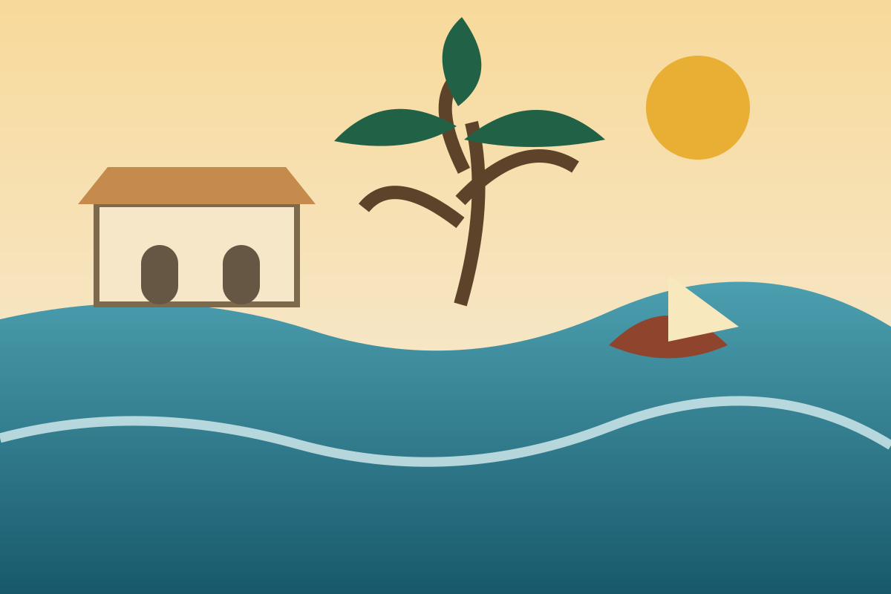

Two to three days
Coastal heritage route
Cape CoastElminaKakum
Begin with a guided visit to Cape Coast Castle or Elmina Castle. The history is difficult, and a guided tour gives the site the attention it deserves. Add Kakum National Park on a separate morning, then reserve time for the fishing communities and coastline.
- Best for history, coast and short forest walks
- Travel early to avoid rushing between sites
- Wear comfortable shoes and carry water